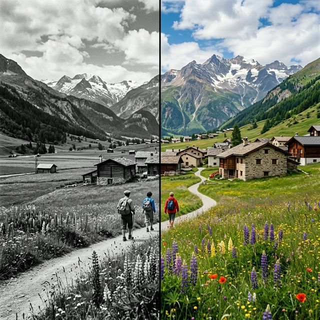

A minimalist tool for intelligent image restoration and colorization.

Instant processing with optimized neural models.
Custom deep learning architecture for realism.
No storage. No tracking. Pure local inference.